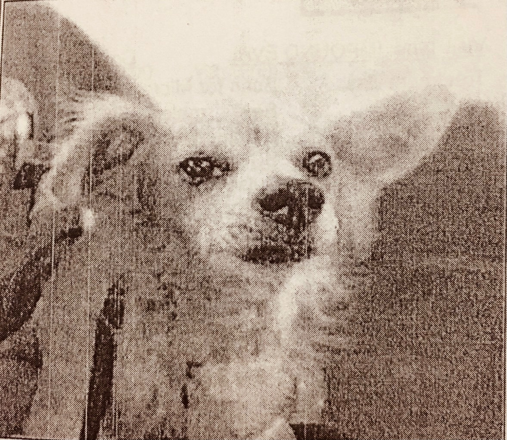
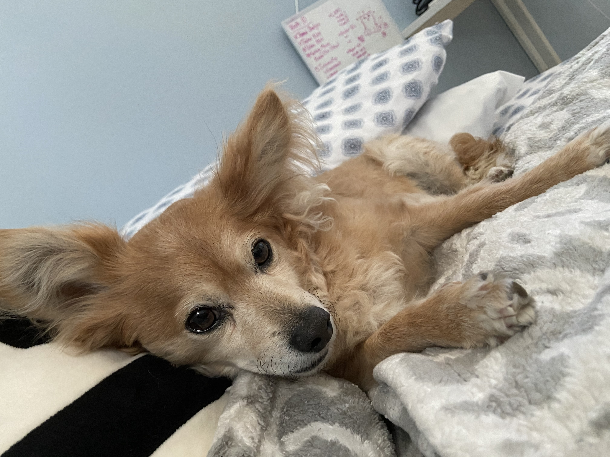
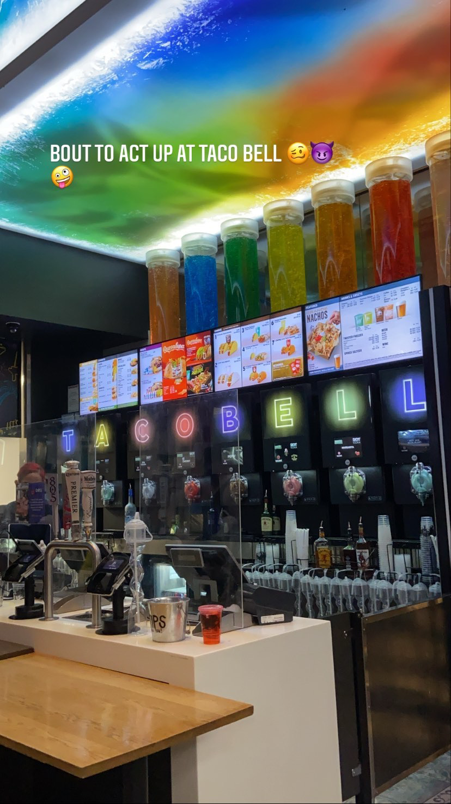

For my nineteenth birthday, my parents let me adopt a dog. My dad wanted something athletic and cool,
while my mom wanted something cute and friendly. To their dismay, I chose a little rat dog with a crooked face and anxiety.
His name is Cannoli. For reference, here is a photo from the shelter:

He had been through multiple shelters because he looks weird and was returned by previous owners after a month for not being affectionate enough.
When I saw him, though, I knew we were going to be best friends. He isn't as anxious as before, and he is very affectionate now, to the point where
it can be a little annoying. My whole family loves him, even though he is lopsided, and I think he loves us too.

Let's Get Baja Blasted 😈
I've been to Vegas once since turning 21. Unfortunately, I can't say I took full advantage of the trip. This is mostly because I am cheap and don't like the prospects of gambling
or paying more than $5 for a bottle of wine. HOWEVER, if I see a big flashy Taco Bell across the Cosmopolitan advertising alcoholic beverages in bright flashing lights, my money is
already in their pockets, frugality be damned.

Disclosure: I may be cheap, but I'm still a hard hitter. This is especially true with the amount of adrenaline only producable by having a drunk couple debating who loves the other more behind you in line as you wait
coursing through my veins. Hence, I got a Strawberry Baja Blast with extra tequilla shots- a decision I ended up regretting not long after. The moral of this story is to never underestimate the power of the blast.